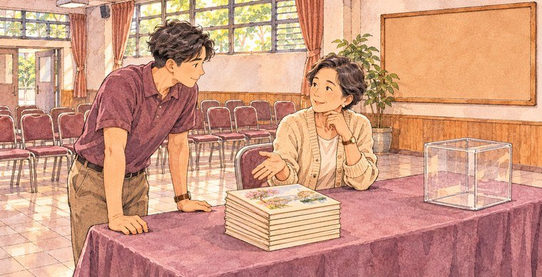

ECO-19 · 香港 · 10–15分鐘 · 具約束力的價格上限 · 超額需求 · 非價格分配
設了價格上限，還有多少短缺？

書本讓讀者聚首，存貨卻始終有限
2026年7月15日，香港文創產業發展處介紹第36屆香港書展開幕的情況，以及該處對出版和閱讀活動的支援。以下的小型售書活動全屬虛構。價格上限是主辦方自願訂立的條件，既非該屆書展的規則，也不是香港的法定價格管制。
課堂決定
你負責一場虛構的售書活動，為期一天，售賣一本普通的插圖消閒讀物。存貨剛好有100本，每本都一樣，全部供應發售，當天無法補貨。按照與主辦方議定的條件，標價最高為60港元，賣方選擇按上限收費。目標是讓讀者以可負擔的價格購書，而非令銷售收入達到最高。採購及活動預算已足以應付任一分配方式，即使售價再低也一樣。目前尚未售出任何一本書，也未向顧客作出任何承諾。
在本練習中，附表列出各個價格下符合資格、願意而且有能力購買一本書的確切人數；每人只計一次，數字並非調查估算。每人只想買一本。不考慮轉售、重複登記、缺席或書本品質變化。所有成功購書的人都會領書付款。80港元一欄僅供比較，顯示100名買家剛好對應100本書；這不是獲准採用的售價。
你可選擇有秩序地排隊、先到先得，或採用公開透明的抽籤，每名合資格人士均可免費登記一次。兩種方式均有經費支持，安排安全並方便有不同需要的人參與，也會提供適切協助、事先通知及私隱保障。排隊者到達服務枱便立即知道結果，但須等候。抽籤在公布的時段內接受登記，不按到場先後排序，但參加者要等到抽籤才知道結果。兩種方式都不能保證人人有書。
若採用抽籤，所有願意購書的合資格買家都會登記，且每人只登記一次。
| 標價 | 願意購買的合資格買家 | 供應冊數 |
|---|
| 80港元：僅供比較 | 100 | 100 |
| 60港元：初定上限 | 150 | 100 |
你的決定標價為60港元時，你會以有秩序的排隊方式分配書本，還是讓每人有同等機會抽籤？請分開說明價格上限達到甚麼效果，以及你的分配規則決定甚麼。
第二輪 · 多了一項資料
在作出任何公布前，主辦方把議定的上限下調至40港元，賣方也會按40港元收費。在這個價格下，剛好有200名不同的合資格買家各想買一本。存貨仍是100本，沒有扣起任何一本；在這次售書活動期間，生產亦無法因應調整。先前有關參與、成本和領書的假設維持不變。
在公布分配方式之前，你可保留或更改原有方式。現有資料並未交代買家的收入、他們有多想買這本書，或他們如何衡量等候時間的價值。不要因為有人較早到場，就推斷對方更有需要；也不要以為抽籤機會均等，就能識別最貧困的買家。每人限購一本的規則已經實施，不能令書本數目增加。
你的決定價格上限現為40港元。你會保留還是更改分配規則？你會如何向買家說明價格是否可負擔，以及有多少人能買到書？請計算短缺數量；如採用抽籤，也請計算每名合資格買家的中籤機會。
價格與數量回答不同問題
價格為60港元時，超額需求是 150 − 100 = 50 本。價格為40港元時，則是 200 − 100 = 100 本。減價令每位成功購書的買家少付20港元現金；但按題設的固定存貨和領書假設，銷量仍是100本。願意買的人多了，買到書的人卻不一定會增加。
訂明非價格分配規則
採用機會均等的抽籤，最初150名買家每人的中籤機會是 100/150，即三分之二。買家增至200名時，中籤機會變為 100/200，即二分之一。排隊方式把書分給最先到場的100名合資格人士；沒有到場資料，就無法計算個別人士買到書的機會。排隊可讓人即時知道結果，但等候時間和到場次序都會影響結果。抽籤讓登記者有同等機會，既不保證有書，也不能證明誰有需要。
不要單憑短缺判斷福利得失
按已訂明的目標衡量，兩種規則都可以有合理依據。公布總存貨、價格、分配方式和可買到書的人數，不要令人以為人人都能買到。若100本全數售出，銷售收入會由6,000港元降至4,000港元，但這並非利潤、消費者福利或社會損失的計算。欠缺個別買家的估值、成本及等候負擔資料，便無法以金額比較福利得失。供應的長期反應不在這個僅涵蓋當天的模型之內。
教師說明
SUS-03 討論的是價格不變時的分配問題；本個案在第二輪改變具約束力的價格上限和需求量，存貨則維持不變。與 ECO-03 的費用負擔歸屬問題不同，賣方不會自行重新定價以作回應。主辦方自願訂立的限制用來說明價格上限如何發揮作用，並不聲稱這是政府政策，也不把結果推論至房屋、必需品或緊急配給。所有人物、價格及數量均為本個案自行設定，沒有重製任何來源的圖表或練習。
第二輪
在作出任何公布前，主辦方把議定的上限下調至40港元，賣方也會按40港元收費。在這個價格下，剛好有200名不同的合資格買家各想買一本。存貨仍是100本，沒有扣起任何一本；在這次售書活動期間，生產亦無法因應調整。先前有關參與、成本和領書的假設維持不變。
在公布分配方式之前，你可保留或更改原有方式。現有資料並未交代買家的收入、他們有多想買這本書，或他們如何衡量等候時間的價值。不要因為有人較早到場，就推斷對方更有需要；也不要以為抽籤機會均等，就能識別最貧困的買家。每人限購一本的規則已經實施，不能令書本數目增加。
你的決定價格上限現為40港元。你會保留還是更改分配規則？你會如何向買家說明價格是否可負擔，以及有多少人能買到書？請計算短缺數量；如採用抽籤，也請計算每名合資格買家的中籤機會。